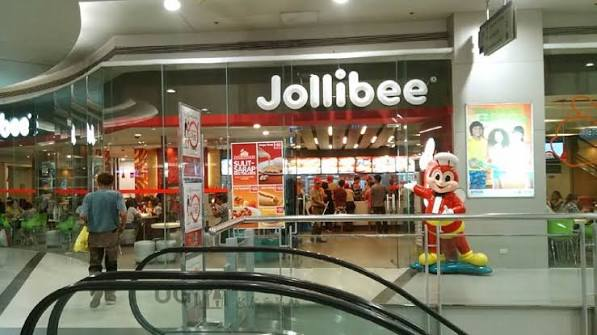

Jollibee - SM Manila

Jollibee at SM City Manila is a convenient food option for students near TUP-Manila. I recommend this place because it is easy to reach, offers familiar meals, and has affordable food options for students who need a quick meal between classes.
It is also a practical choice when students want something familiar without spending too much time looking for a place to eat. Its location near the campus makes it convenient for students who are already in the area.
Place Details
| Category | Details |
|---|---|
| Type | Fast Food Restaurant |
| Location | SM City Manila |
| Price Range | Student-friendly |
| Best Time to Visit | Before or after class |